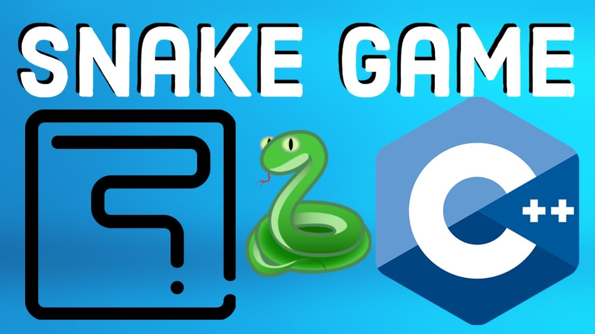
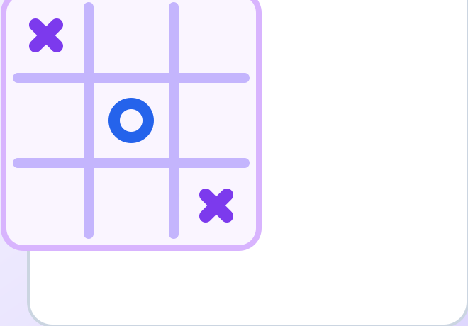
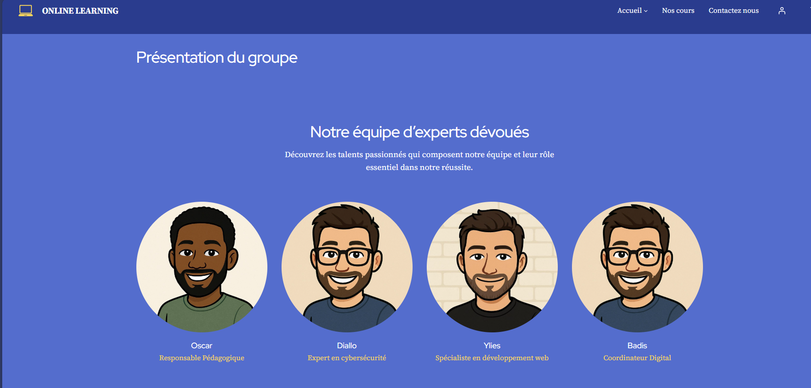
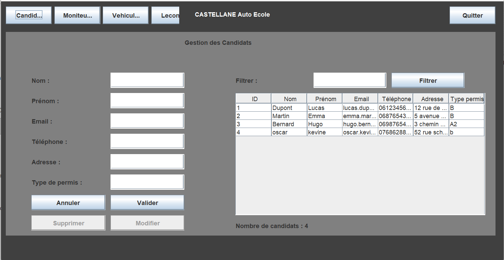
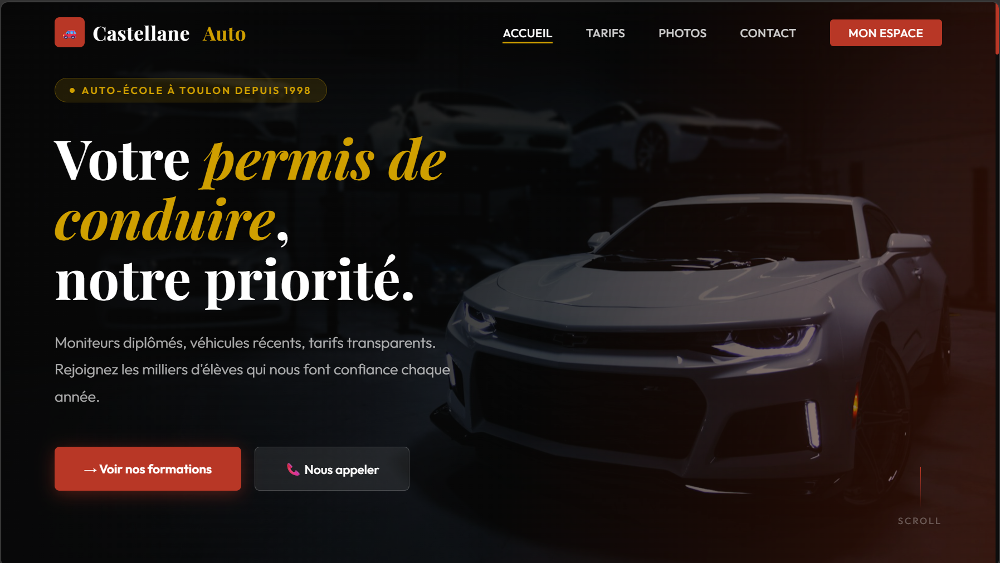
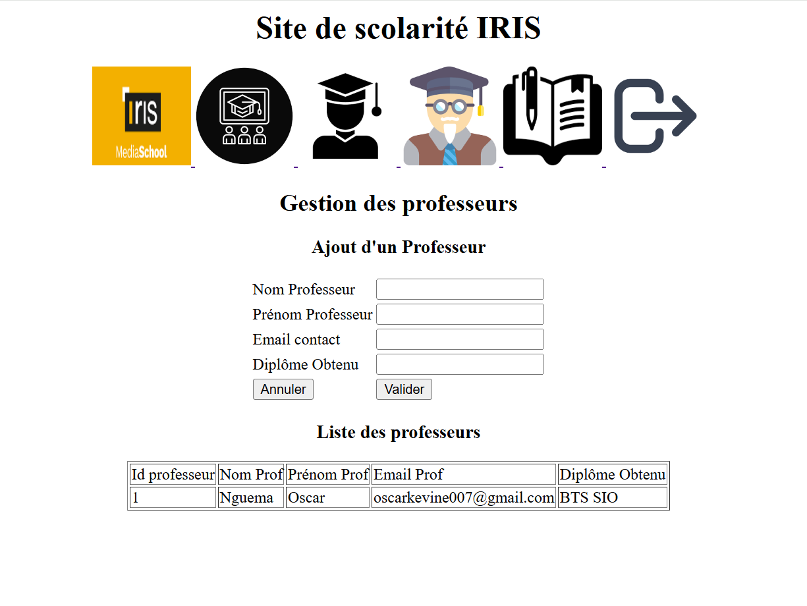
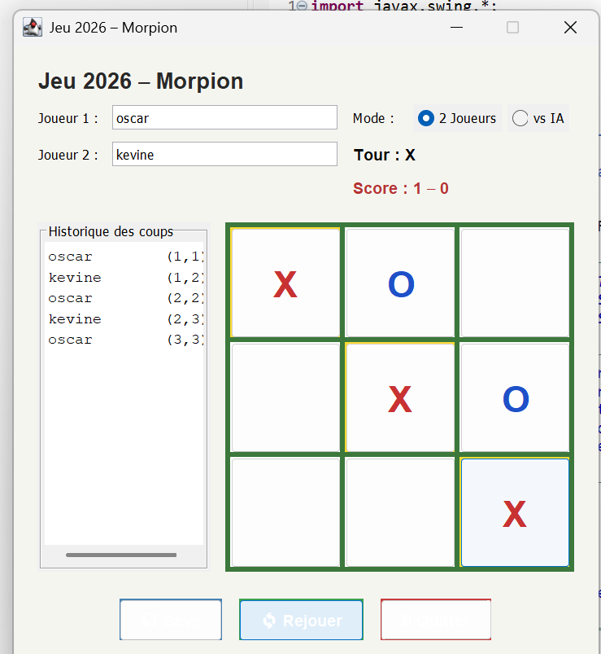
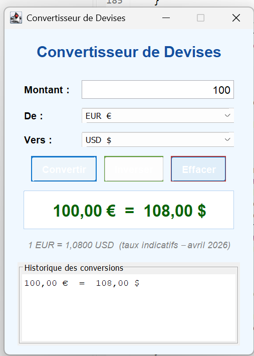
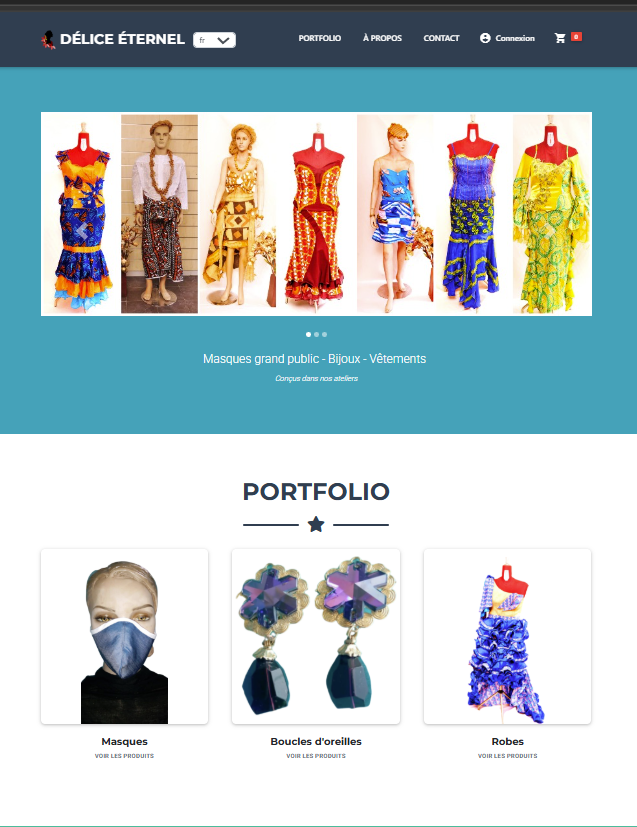
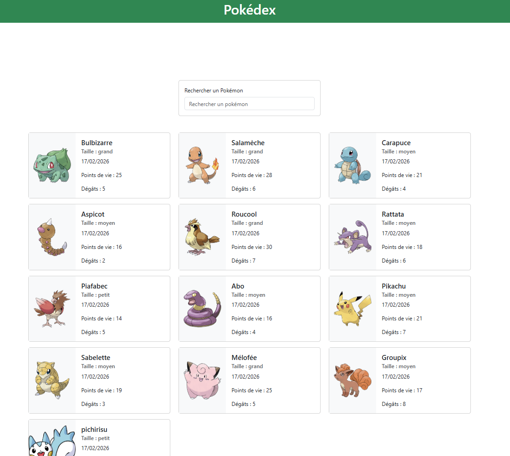

Baccalauréat général
Lycée René Descartes — Gabon
Formation générale scientifique. C'est ici que naît mon intérêt pour l'informatique et la logique algorithmique, en parallèle de mes cours de mathématiques et physique.
Étudiant développeur web & logiciel
En BTS SIO SLAM à l'IRIS Paris, je conçois des applications web et logicielles du front-end au back-end. De la gestion d'auto-école en Java à l'intégration d'un système de paiement Stripe + Angular + Firebase en stage — chaque projet renforce mes compétences techniques et mon autonomie.
De la découverte de l'informatique au développement web
Né au Gabon et arrivé en France pour mes études supérieures, j'ai choisi le BTS SIO option SLAM par passion pour la création d'applications. Ce qui m'a attiré vers le développement logiciel, c'est la possibilité de transformer une idée en produit fonctionnel — du code au résultat concret. Chaque projet réalisé au cours de ma formation m'a permis de progresser techniquement et de développer une approche rigoureuse et structurée du travail.
Lycée René Descartes — Gabon
Formation générale scientifique. C'est ici que naît mon intérêt pour l'informatique et la logique algorithmique, en parallèle de mes cours de mathématiques et physique.
ITIC Paris
Première plongée dans l'informatique professionnelle : bases du développement web (HTML, CSS, PHP), introduction aux bases de données SQL, gestion de parc informatique avec GLPI. Premier stage en entreprise.
IRIS Paris
Spécialisation en Solutions Logicielles et Applications Métier : Angular, Firebase, PHP/MySQL, architecture MVC, sécurité web, gestion de projet. Stage de 5 semaines avec intégration Stripe dans une application Angular.
Poursuite d'études · Développeur Full-Stack
Après l'obtention du BTS SIO SLAM, je souhaite poursuivre en Bachelor ou Licence Pro spécialisé en développement web full-stack, avec pour objectif professionnel d'évoluer vers un poste de développeur dans une entreprise tech innovante.
Langages, outils et méthodes acquis au fil de mes projets — du front-end au back-end
 H
HSémantique, accessibilité ARIA, SEO.
Avancé C
CResponsive, Flexbox, Grid, animations, dark mode.
Avancé JS
JSDOM, événements, Canvas, logique client, ES6+.
IntermédiaireSPA, composants, services, httpsCallable(), TypeScript.
CMS, thèmes, plugins, personnalisation, IONOS.
Intermédiaire P
PBack-end, MVC, sessions, PDO, formulaires sécurisés.
IntermédiaireFunctions, Firestore, cloud, webhooks Stripe.
Intermédiaire SQL
SQLRequêtes, jointures, transactions, conception BDD.
Intermédiaire C++
C++POO, algorithmique, Swing GUI, JDBC.
Débutant <>
<>Éditeur principal, extensions, debug, Live Share.
Avancé GH
GHVersioning, branches, commits, collaboration.
Intermédiaire X
XEnvironnement local Apache + MySQL + PHP.
Intermédiaire F
FMaquettes UI/UX, prototypes, wireframes.
Débutant T
TGestion Kanban, organisation des sprints.
IntermédiaireIDE Java, compilation, débogage.
DébutantPlanification, chemin critique, gestion de projet.
Intermédiaire AI
AIAssistance au développement, debug, documentation.
AvancéProjets scolaires, stages et réalisations personnelles

Recréation du classique jeu Snake avec système de score, accélération progressive et gestion du pause/reset. Rendu graphique via Canvas API.
Acquis : Programmation événementielle, boucle de jeu avec requestAnimationFrame, gestion d'état

Jeu de morpion avec interface moderne et choix de symboles personnalisés (images ou icônes) pour chaque joueur, détection de victoire et aperçu en temps réel.
Acquis : Manipulation du DOM, logique de jeu, gestion d'état, événements utilisateurs
Création et configuration complète d'une boutique e-commerce : catalogue produits, pages collections, intégration du paiement et personnalisation du thème Liquid.
Acquis : Administration e-commerce, langage de templating Liquid, optimisation UX boutique

Plateforme d'enseignement en ligne développée en équipe avec WordPress et hébergée sur IONOS. Maquettes Figma, gestion de contenu CMS et sécurisation du site.
Acquis : Travail en équipe, maquettage Figma, déploiement sur hébergeur, sécurisation WordPress

Application desktop Java de gestion complète d'auto-école : élèves, moniteurs, planning, paiements et exports PDF. Interface graphique Swing avec architecture MVC et connexion JDBC.
Acquis : Architecture MVC en Java, GUI Swing, connexion BDD via JDBC, génération PDF, gestion des rôles

Application web PHP/MySQL de gestion d'auto-école : candidats, moniteurs, véhicules, cours. CRUD complet, sessions sécurisées, architecture MVC et interface responsive.
Acquis : CRUD complet, requêtes SQL paramétrées, architecture MVC PHP, gestion des sessions et sécurité

Installation et configuration d'un environnement Linux/Apache/PHP/MySQL complet pour déployer GLPI : gestion des tickets d'assistance IT, inventaire du matériel et administration des utilisateurs.
Acquis : Administration Linux, déploiement LAMP, configuration GLPI, gestion des tickets IT et inventaire parc

Application web PHP/MySQL de gestion scolaire : étudiants, classes, matières, professeurs. Connexion administrateur sécurisée, opérations CRUD complètes, affichage dynamique.
Acquis : CRUD complet, architecture MVC PHP, connexion PDO, organisation vues/contrôleurs, authentification admin

Jeu de morpion développé en Java avec interface graphique Swing. Deux joueurs s'affrontent sur une grille 3×3 avec détection automatique de victoire et option de réinitialisation.
Acquis : Programmation orientée objet en Java, interface graphique Swing, gestion des événements et logique de jeu

Application desktop Java de conversion d'unités : températures, distances, poids et devises. Interface graphique Swing intuitive avec conversion en temps réel à la saisie.
Acquis : Conception d'interface Swing, gestion des événements, calculs de conversion, structuration en classes Java

Développement d'un site e-commerce de vêtements africains, bijoux et masques avec Angular 12 + Firebase. Architecture modulaire, gestion d'état NgRx, authentification, i18n et déploiement cloud.
Acquis : Architecture Angular avancée, Firebase full-stack, gestion d'état NgRx, déploiement cloud en conditions réelles.

Développement d'un module de paiement en ligne via Stripe Payment Links intégré à une plateforme Angular + Firebase existante. Génération automatique de liens, envoi par email (SendGrid), webhook de suivi des statuts en temps réel.
Acquis : Stripe Payment Links & Webhooks, Firebase Functions, Angular httpsCallable(), sécurité paiements, emails transactionnels, documentation technique professionnelle

Application Angular complète de gestion de Pokémon : liste filtrée en temps réel, fiche détaillée, ajout, édition et suppression. Architecture moderne avec signaux, services et routing.
Acquis : Composants standalone, signaux Angular, services HTTP, routing protégé (guards), directives personnalisées, formulaires réactifs
L'IA dans le développement web
Surveiller les avancées et usages de l'IA appliqués au développement web pour identifier les outils, tendances et bonnes pratiques qui améliorent la productivité, la qualité et la sécurité des applications.
Thème 1 : L'intelligence artificielle au service du développement web.
Ce sujet est essentiel car l'IA transforme la façon dont les développeurs conçoivent, codent, testent et maintiennent des applications.
Objectifs : Comprendre les usages concrets, identifier les outils majeurs, et analyser les bénéfices et limites dans un contexte professionnel.
Copilot, ChatGPT, autocomplétion et suggestions intelligentes pour accélérer la production de code.
Chatbots, API IA, génération de contenu, automatisations et expériences personnalisées.
Sécurité, dépendance, confidentialité des données, biais et contrôle humain.

L'IA réduit le temps de développement et améliore la qualité des livrables grâce à l'assistance au code.
Lire plus
Les outils d'IA facilitent la génération de scénarios de test et aident à détecter certains défauts plus tôt.
Lire plus
L'usage de l'IA en production impose de surveiller les risques liés aux données, aux prompts et aux modèles utilisés.
Lire plus
Copilot aide à proposer du code, compléter des fonctions et accélérer les tâches répétitives.
Lire plus →
Le SDK de Vercel simplifie l'intégration de fonctionnalités IA dans des applications web modernes.
Lire plus →
Google propose des outils et API dédiés aux développeurs souhaitant intégrer des fonctions IA dans leurs projets.
Lire plus →
L'IA peut personnaliser l'expérience utilisateur et optimiser certains parcours sur les interfaces web.
Lire plus →
LangChain JS apporte une base pratique pour connecter modèles, prompts et logique applicative côté web.
Lire plus →
L'intégration dans VS Code montre comment l'IA s'insère directement dans l'environnement de développement.
Lire plus →L'IA générative représente une rupture dans la façon de coder : des outils comme GitHub Copilot ou ChatGPT accélèrent réellement la production, mais ils exigent un regard critique constant. J'ai expérimenté ces outils dans mes projets scolaires et j'ai observé qu'ils sont efficaces pour les tâches répétitives (boilerplate, requêtes SQL, documentation), mais qu'ils ne remplacent pas la compréhension du problème. Le risque majeur reste la dépendance et l'acceptation aveugle de code non maîtrisé, qui peut introduire des failles de sécurité.
L'IA est désormais un outil incontournable du développeur, mais elle amplifie les compétences existantes sans les remplacer. Maîtriser les fondamentaux reste essentiel pour exploiter ces outils de façon responsable et sécurisée.
La cybersécurité dans le développement web
Surveiller les enjeux, menaces et bonnes pratiques liés à la cybersécurité dans le développement web, afin d'identifier les risques majeurs et les méthodes permettant de concevoir des applications plus sûres et fiables.
Étudier les risques les plus critiques pour les applications web selon OWASP afin de mieux sécuriser les développements.
XSS, SQL Injection, CSRF et autres failles fréquentes qui peuvent compromettre les données et les utilisateurs.
Validation des entrées, gestion des sessions, hashage des mots de passe, HTTPS et sécurisation du code.

Référence incontournable pour identifier les failles les plus critiques dans une application web.
Lire plus →
Le XSS permet d'injecter du code malveillant dans une page web et met en danger les utilisateurs.
Lire plus →
Une mauvaise gestion des requêtes SQL peut permettre l'accès ou la modification de données sensibles.
Lire plus →
Le CSRF exploite la confiance accordée à l'utilisateur connecté et nécessite des protections adaptées comme les tokens.
Lire plus →
La protection des comptes passe par des mots de passe sécurisés, le hashage et une politique d'authentification fiable.
Lire plus →
Intégrer la sécurité dès la conception permet de limiter les vulnérabilités tout au long du cycle de développement.
Lire plus →La cybersécurité est un aspect souvent négligé en début de formation, mais que j'ai rapidement compris comme fondamental. Dans mes projets PHP/MySQL (auto-école, scolarité), j'ai appliqué concrètement des protections contre l'injection SQL via PDO et des requêtes paramétrées, et géré les sessions de façon sécurisée. La certification CNIL m'a également sensibilisé aux enjeux RGPD. Ce que retiens de cette veille : la sécurité ne s'ajoute pas en fin de projet, elle se conçoit dès le début (security by design).
Les failles web (XSS, SQL Injection, CSRF) restent parmi les plus exploitées en production. En tant que développeur, intégrer les bonnes pratiques OWASP dès la conception est une responsabilité professionnelle, pas une option.
Où je veux aller après le BTS SIO SLAM
Obtenir le BTS SIO SLAM avec mention. Poursuivre en Bachelor ou Licence Pro en développement web/logiciel pour approfondir les architectures cloud, les API REST et le développement full-stack.
Intégrer une entreprise tech en tant que développeur web junior, idéalement en alternance ou CDI. Contribuer à des projets concrets, progresser sur les stacks modernes (Angular, React, Node.js, Firebase).
Évoluer vers un poste de développeur full-stack senior ou tech lead, avec une expertise en architecture d'applications et en sécurité web. Contribuer à des projets à fort impact utilisateur.
"Ce qui me motive dans le développement logiciel, c'est la capacité à transformer une idée abstraite en application concrète et fonctionnelle — du code qui résout de vrais problèmes pour de vraies personnes."— Oscar Kévine NGUEMA, étudiant BTS SIO SLAM
Intéressé pour discuter ou collaborer ? N'hésitez pas !